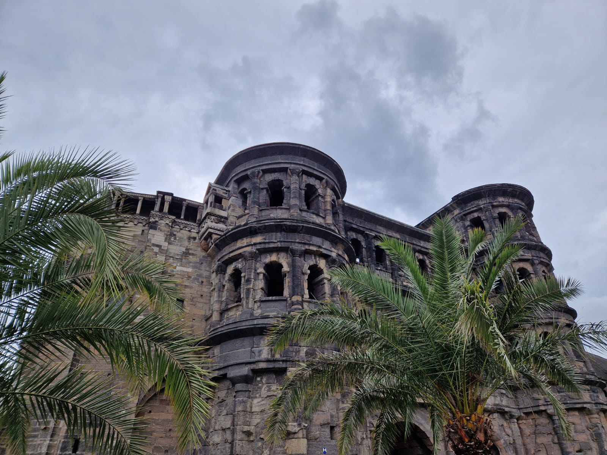
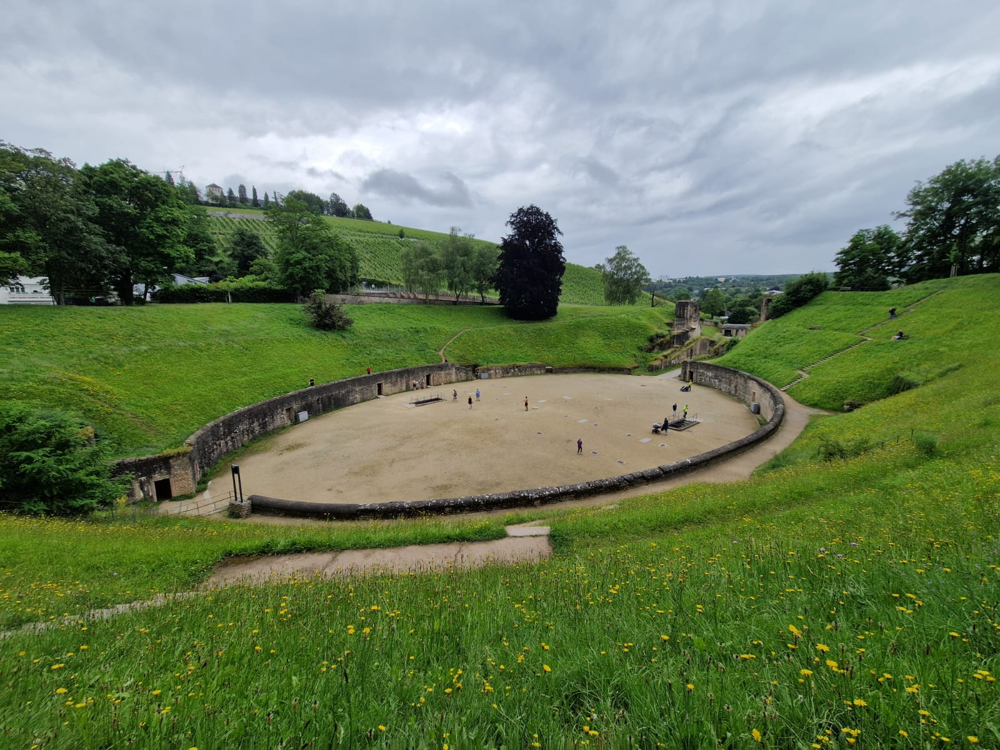
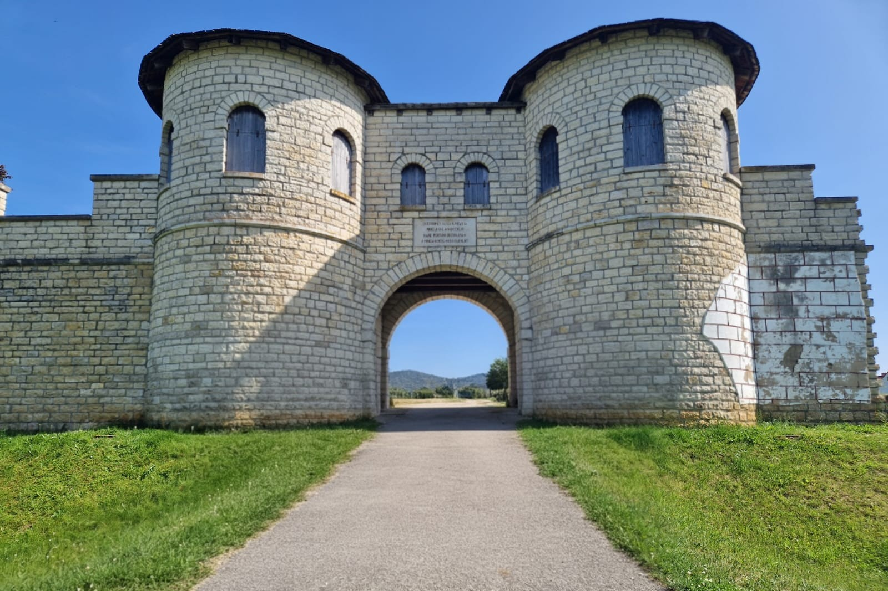
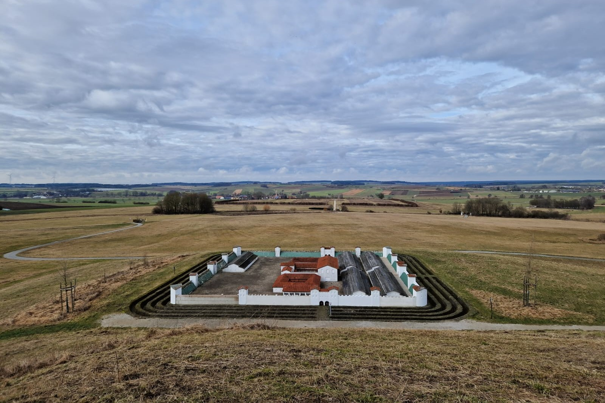

Tagesexkursionen

Die porta nigra von Trier - Ein römisches Stadtor der Colonia Augusta Treverorum

Römisches Amphitheater der Colonia Augusta Treverorum (heutiges Trier)

Nordtor des Kastells Biriciana in Weißenburg

Miniaturrekonstruktion im Vordergrund des einstigen Kastells in Ruffenhofen

Grabsteinplatzierung auf dem Weg zum Kastell Ruffenhofen